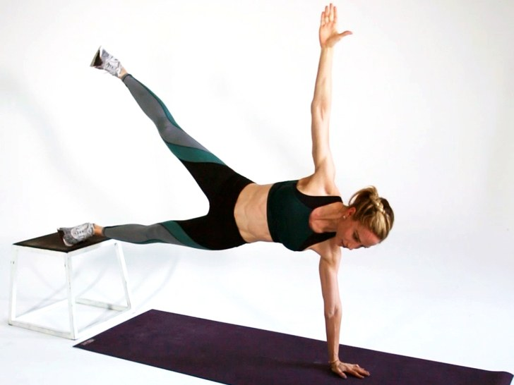

<!--
  Generated template for the DashboardPage page.

  See http://ionicframework.com/docs/components/#navigation for more info on
  Ionic pages and navigation.
-->
<ion-header>
  <ion-navbar>
    <ion-title>Abs Workout</ion-title>
    <ion-header>
        <ion-toolbar color="light">
          <ion-searchbar (input)="getItems($event)"></ion-searchbar>
        </ion-toolbar>
      </ion-header>
      
  </ion-navbar>
</ion-header>

<ion-content padding>
   
    <ion-card>
      
        <ion-card-header>
            Top Picks Workout
        </ion-card-header>
      
        <ion-list>
        
           <div></div>
           <h1>Begginer Abs Tone</h1>
           <h6>7x4 challenge</h6>
           <h6><ion-icon name="star-half"></ion-icon><ion-icon name="star-outline"></ion-icon><ion-icon name="star"></ion-icon></h6>
          
      
      
              
                  <div></div>
                  <h1>Begginer Abs Tone</h1>
                  <h6>7x4 challenge</h6>
           <h6><ion-icon name="star-half"></ion-icon><ion-icon name="star-outline"></ion-icon><ion-icon name="star"></ion-icon></h6>
             
        
      
            
                  <div></div>
                  <h1>Begginer Abs Tone</h1>
                  <h6>7x4 challenge</h6>
                  <h6><ion-icon name="star-half"></ion-icon><ion-icon name="star-outline"></ion-icon><ion-icon name="star"></ion-icon></h6>
        </ion-list>
      </ion-card>

    

</ion-content>
